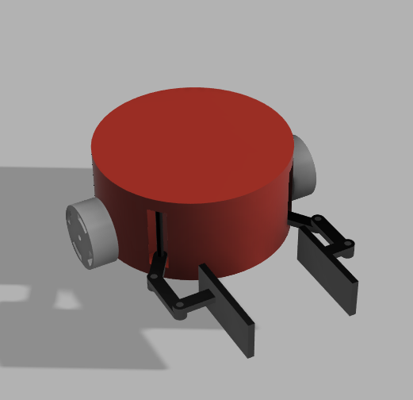

Multi Robot Navigation for environment cleaning application

Abstract
- This project addresses the navigation and environmental cleanup of waste objects through a multi-robot system.
- A potential field-based controller is developed employ a group of differential drive mobile robots equipped with grippers to autonomously collect
garbage bag and transport it to a designated garbage bin.
- The methodology involves spawning a varying number of robots and waste objects randomly on a known map,
where the environment, waste object locations, and garbage bin placement are predefined.
- A potential field-based controller guides each robot through the environment, utilizing a designed navigation function to ensure obstacle
avoidance and successful waste collection.
- The simulation environment leverages the "Gazebo" platform in
conjunction with ROS2 to emulate the Multi-Robot System. The differential drive robots are equipped with grippers
suitable for collecting garbage bag.
Mathematical Model
The Robot has a centralized
communication with robots having
complete knowledge of the map of the
environment.
- The environment is bounded and
contains obstacles in the form of spheres.
- The robots are assumed as obstacles in
the environment.
- The trash bag is assumed to be a
sphere and hence the goal function is to
minimize the distance to the sphere.
The mobile robot kinematics is given by
robot image.
𝑥̇ = 𝑣 sin(θ)
𝑦̇ = 𝑣 𝑐𝑜𝑠(θ)
θ̇ = 𝜔
𝑉 =
𝑅(𝑉𝑟 + 𝑉𝑖
)
2
𝑊 =
𝑅(𝑉𝑟 − 𝑉𝑖
)
𝐿
𝑥̇ = 𝑣 cos(𝜃)
𝑦̇ = 𝑣 sin(𝜃)
𝜃̇ = 𝜔